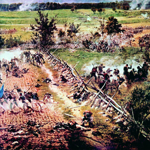
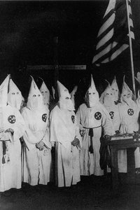

Lezione 14  Stati Uniti
Stati Uniti

-
300
465
-
340
455
-
310
340
-
275
505
-
300
425

GETTYSBURG
La battaglia di Gettysburg del 1863 è lo scontro più cruento della guerra civile americana: si conclude con la vittoria delle forze dell’Unione contro i Confederati del sud: nel giro di poche ore vi perdono la vita oltre 20.000 soldati.
GEORGIA
Fondato nel 1866 da ex militari delle truppe confederate per affermare la superiorità della razza bianca sulla popolazione nera, il Ku Klux Klan è un’organizzazione razzista i cui membri nascondono la loro identità dietro i larghi cappucci bianchi che costituiscono la parte più impressionante della loro uniforme.UTAH
L’avanzamento della frontiera sempre più a ovest avviene a spese degli indiani nativi, che vengono sostanzialmente sterminati.WASHINGTON
1823: Il presidente americano James Monroe definisce la “dottrina Monroe”, che sancisce il diritto all’indipendenza delle colonie americane e l’opposizione a qualsiasi ingerenza delle potenze europee negli affari americani: “ l’America agli americani”. Questa posizione caratterizzerà gran parte della storia politica americana. 1865 Proibizione della schiavitù in tutto il paese. Nel 1868 un emendamento della costituzione stabilisce l’uguaglianza razziale come fondamento della convivenza civile. GETTYSBURG
Nel 1860 la Carolina del sud, con altri dieci stati meridionali, decide la secessione e la formazione di una propria confederazione.
Poco dopo, nel 1861-65, scoppia la guerra di secessione. Lo scontro fra Nord e Sud è inevitabile: il primo è in rapido sviluppo industriale, si basa sulla cultura e sullo spirito del capitalismo moderno, su rapporti di lavoro liberi; il secondo è caratterizzato da grandi piantagioni basate sul lavoro degli schiavi neri.